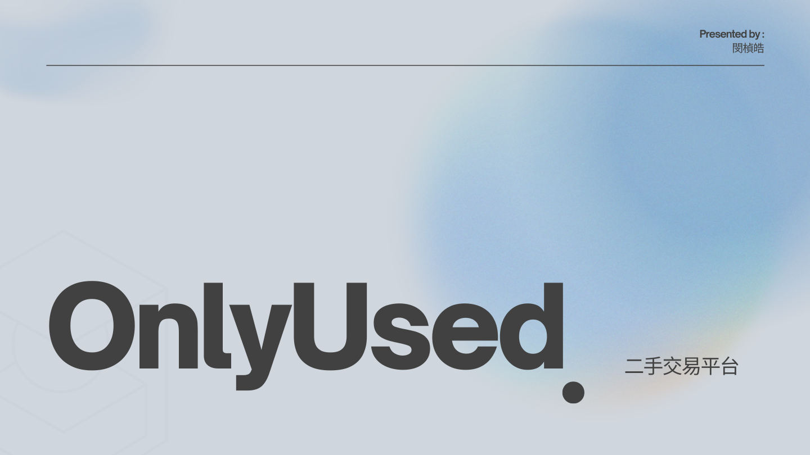
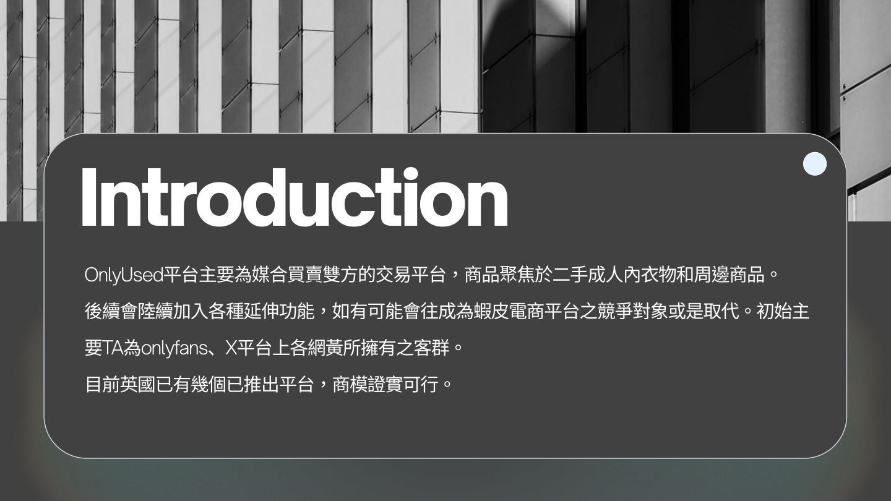
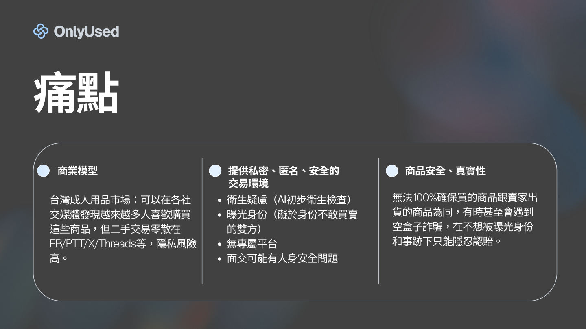
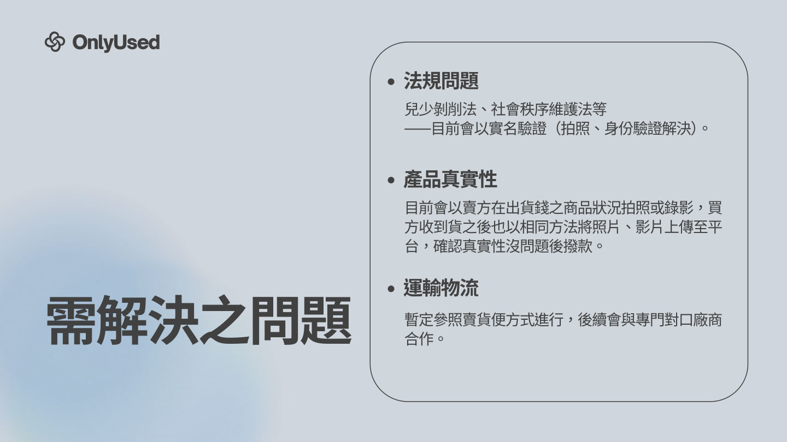
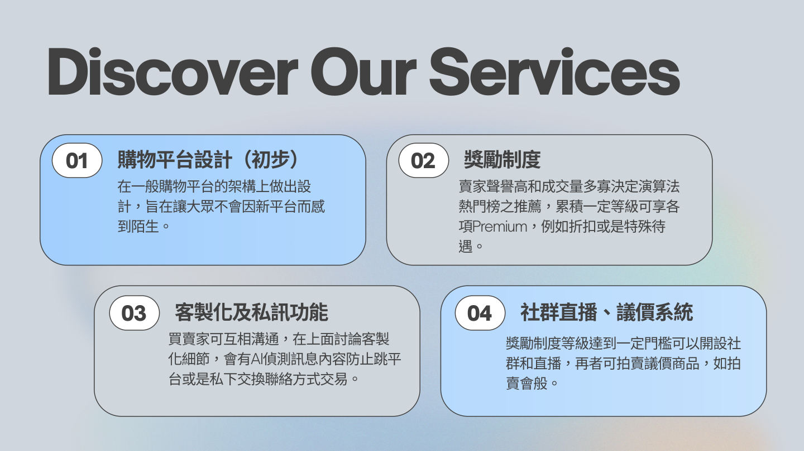
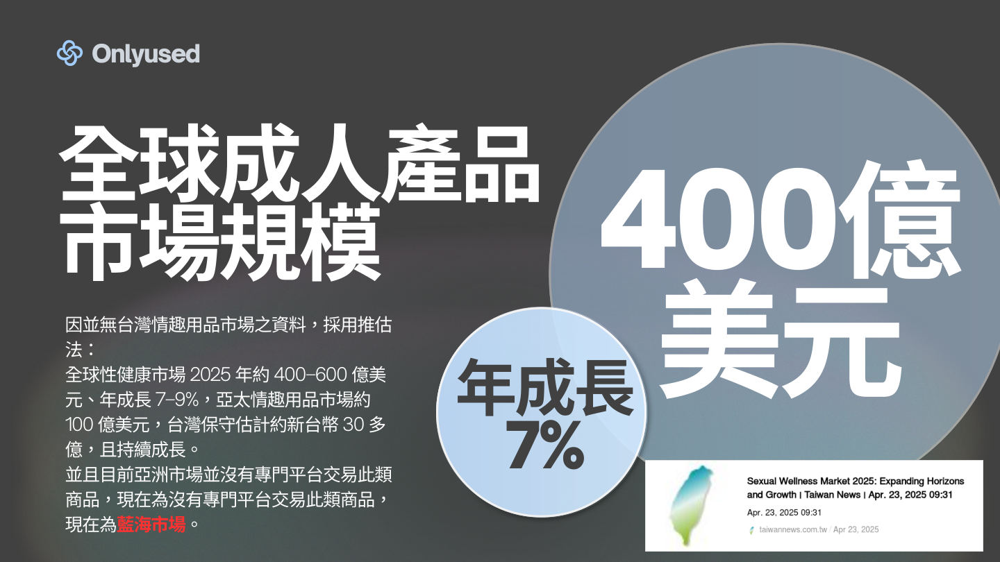
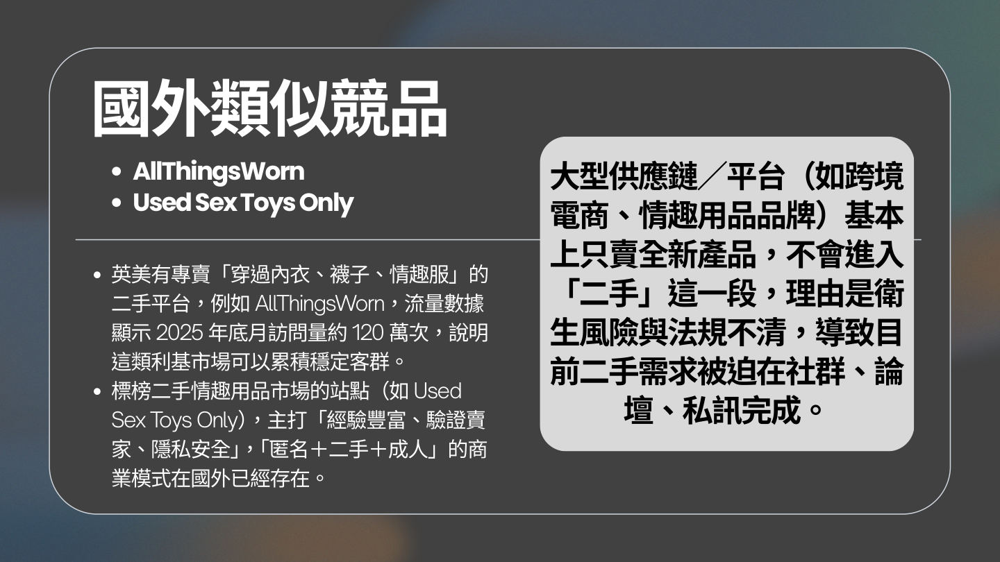
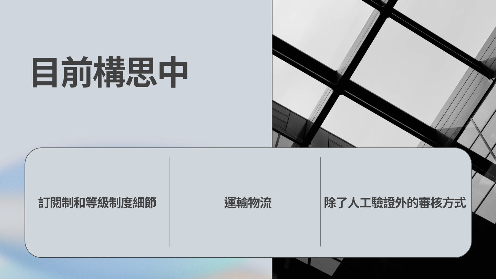
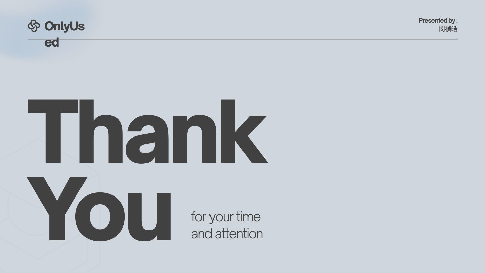

OnlyUsed 提案簡報
原始檔案：〈OnlyUsed.pdf〉（Canva 製作，2026-05-04，共 10 頁），依原樣轉為圖片，未改動內容。第 7、8 頁的市場與競品數字為簡報當時的引用，未經獨立查證。

p.1 封面

p.2 Introduction

p.3 痛點

p.4 需解決之問題
p.5 Discover Our Services

p.6 服務規劃

p.7 市場規模（簡報引用，未查證）

p.8 國外競品（簡報引用，未查證）

p.9 目前構思中

p.10 Thank you